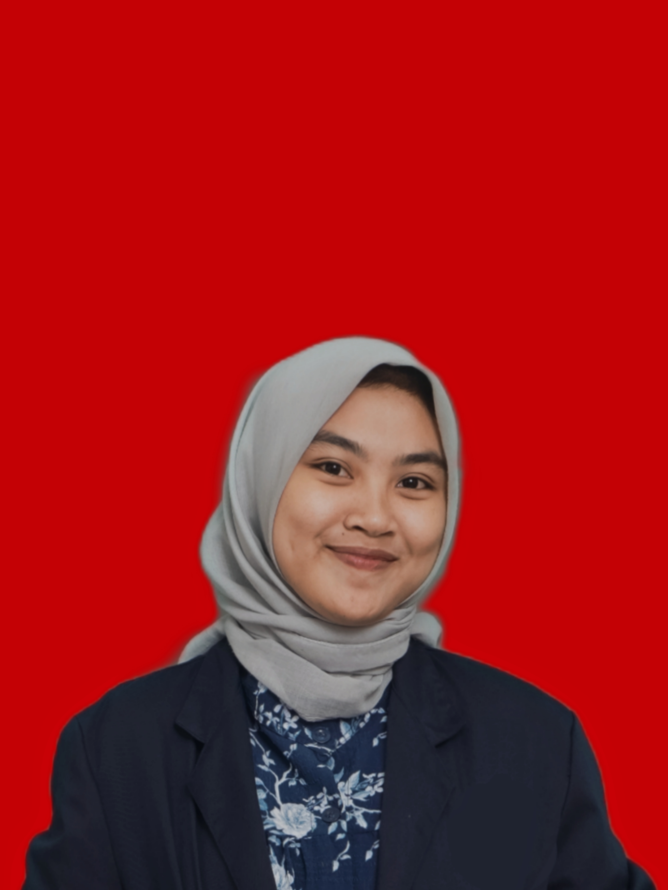

Siti Rahma Salsabila

Mahasiswa Semester 3 program studi Bisnis Digital di pendidikan vokasi politeknik PGRI Banten, yang memiliki minat dalam bidang keuangan, Customer Servis, dan layanan Pelanggan
Mampu berkomunikasi dengan baik, memiliki skill di bidang Microsoft Office, disiplin, mampu bekerja dengan baik dalam tim, pernah aktif dalam kegiatan ektrakulikuler dan pengalaman menjadi panitia perlombaan paskibra, dan memiliki bisnis makanan bersama
teman-teman (perfoodan).
PERSONAL INFORMATION
|
|
| Nama Lengkap |
: Siti Rahma Salsabila |
| Tempat Tanggal Lahir |
: Cilegon, 27 September 2003 |
Alamat |
: Link. Gardu Iman RT/RW. 03/02 |
| Status |
: Mahasiswa |
| Email |
: sitirahmasalsabila9@gmail.com |
PENDIDIKAN FORMAL
|
|
| 2022 - Sekarang |
Politeknik PGRI Banten ( D4 Bisnis Digital) |
| 2019- 2022 |
SMA N 5 CILEGON (IPS) |
ORGANISASI
|
|
| 2023 - Sekarang |
Bendahara Himpunan Mahasiswa |
| 2023 |
Sekertaris 17 Agustus |
KEAHLIAN
1. Mengoperasikan Komputer (Microsoft Office)
2. Mengunakan Canva